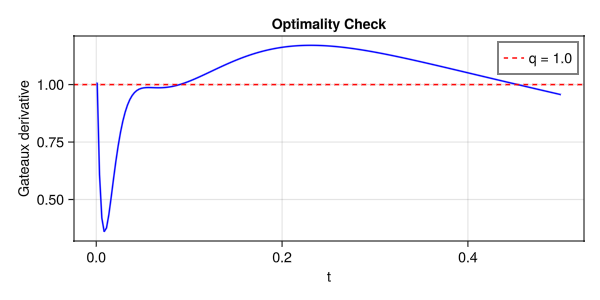
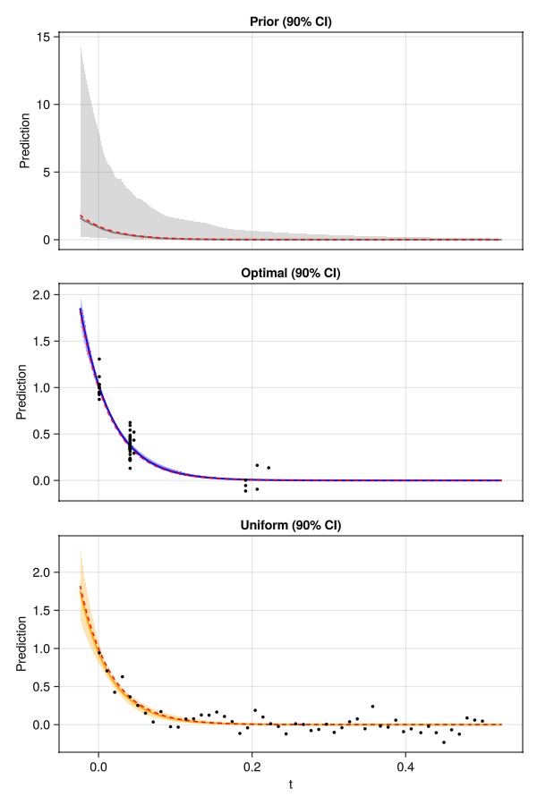
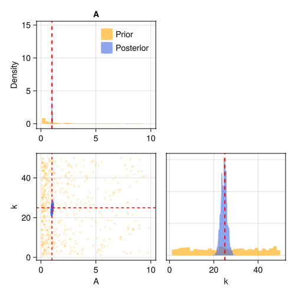
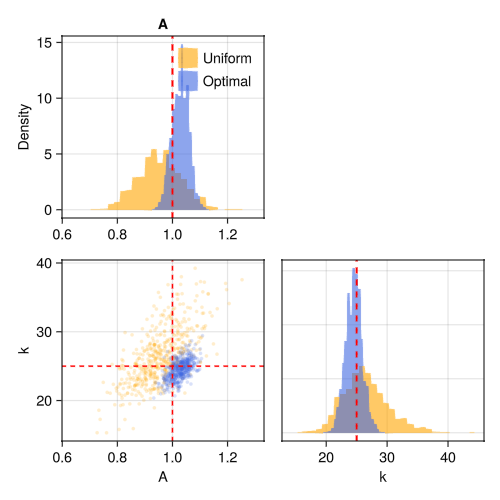

Batch Design
Compute an optimal batch design for an exponential decay, compare it to uniform spacing, then acquire simulated data and examine the posterior.
The model
An exponential decay with amplitude $A$ and rate $k$:
\[y = A \exp(-k \, t) + \varepsilon, \qquad \varepsilon \sim \mathcal{N}(0, \sigma^2)\]
We want to estimate $k$ as precisely as possible, treating $A$ as a nuisance parameter.
using OptimalDesign
using CairoMakie
using ComponentArrays
using Distributions
function model(θ, x)
θ.A * exp(-θ.k * x.t)
end
θ_true = ComponentArray(A = 1.0, k = 25.0)
σ = 0.1
acquire(x) = model(θ_true, x) + σ * randn()Defining the design problem
To define a design problem, we need to specify the model, the prior uncertainty on each parameter, the noise level, and which parameters we want to estimate. The prior distributions should cover the plausible range of parameter values. The design is optimised across this full range (Bayesian averaging), not at a single guess.
prob = DesignProblem(
model,
parameters = (A = LogUniform(0.1, 10), k = Uniform(1, 50)),
transformation = select(:k),
sigma = Returns(σ),
)model— the prediction function(θ, x) -> yparameters— prior distributions on each parameter, using any distribution from Distributions.jl (e.g.Uniform,Normal,LogUniform,LogNormal,Truncated(Normal(...), lo, hi))sigma— noise standard deviation. UseReturns(σ)for constant noise, or a function(θ, x) -> σif noise variestransformation—select(:k)tells the algorithm we only care about estimating $k$, switching from D-optimal to Ds-optimal design. Omit this to optimise for all parameters equally
Candidate grid
The candidate grid defines the set of allowed measurements — all the design points where the algorithm is permitted to place observations. Each candidate is a NamedTuple (e.g. (t = 0.1,)). The candidate_grid helper generates the full outer product from named ranges:
candidates = candidate_grid(t = range(0.001, 0.5, length = 200))Computing the design
The design function takes the problem, candidates, and a particle-based prior, and returns an optimal allocation of n measurements. The prior (Particles) is a weighted sample from the parameter distributions — 1000 particles is typically enough.
prior = Particles(prob, 1000)
ξ = design(prob, candidates, prior; n = 50)ExperimentalDesign: 50 measurements at 6 support points
t=0.001 ×12 ████████████
t=0.0411 ×29 █████████████████████████████
t=0.0461 × 3 ███
t=0.1916 × 3 ███
t=0.2066 × 2 ██
t=0.2217 × 1 █
The Ds-optimal design concentrates measurements at two extremes — short times pin down the amplitude, long times pin down the rate.
Checking optimality
The Gateaux derivative provides a visual check of optimality. It should touch the bound $q$ (the number of parameters of interest) at the support points and lie below it everywhere else:
plot_gateaux(prob, candidates, prior, ξ)
The optimality condition is defined for continuous designs (fractional weights over candidates). In practice, design rounds these weights into integer measurement counts, so the Gateaux derivative may slightly exceed the bound. This is normal — a small overshoot indicates the discrete approximation is close to optimal.
Comparing to uniform spacing
How much better is the optimal design than uniform spacing? The efficiency function returns the ratio — a value below 1 means the first design is less efficient:
ξ_unif = uniform_allocation(candidates, 50)
efficiency(ξ_unif, ξ, prob, candidates, prior)[ Info: Efficiency of A vs B: 0.6109 (A needs ~1.6× more measurements to match B)Running the experiment
run_batch calls acquire at each design point and updates the posterior via likelihood tempering. The result carries both the original prior and the updated posterior:
result_opt = run_batch(ξ, prob, prior, acquire)
result_unif = run_batch(ξ_unif, prob, prior, acquire)Credible bands
Credible bands show the model prediction uncertainty narrowing from prior to posterior. Passing multiple results overlays them for comparison:
plot_credible_bands(prob, result_opt, result_unif;
labels = ["Optimal", "Uniform"], truth = θ_true)
Corner plots
A corner plot shows marginal and pairwise joint distributions. Passing a single result shows the prior contracting to a tight posterior:
plot_corner(result_opt; truth = θ_true)
Passing two results compares their posteriors directly — the optimal design produces a tighter posterior on $k$:
plot_corner(result_unif, result_opt;
labels = ["Uniform", "Optimal"], truth = θ_true)